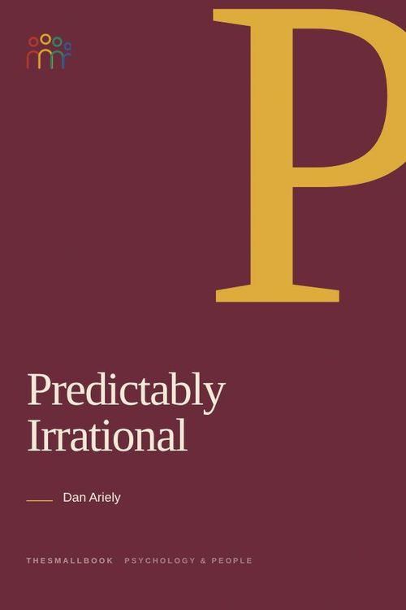

Library › Ask the Library › How do I make better decisions?
How do I make better decisions?
The short answer
Good decisions come from process, not genius: define the problem, gather dissent, check your biases, and plan the response to being wrong.
The books behind the answer

Thinking, Fast and Slow
Daniel Kahneman · 2011 · 8 min · 6 lessons
Your fast, intuitive System 1 runs your life; your slow, rational System 2 mostly just approves its drafts. Know when to override.
- Two Systems: The Hero and the Lazy Controller: Your gut (System 1) is fast but biased. For big calls, slow down and interrogate your first answer.

Predictably Irrational
Dan Ariely · 2008 · 8 min · 6 lessons
We're not crazy - we're predictably irrational. Learn the patterns and you can outsmart yourself.
- The Anchor: You anchor on whatever number is in front of you. Write YOUR number before seeing theirs.

Good Strategy Bad Strategy
Richard Rumelt · 2011 · 8 min · 6 lessons
Real strategy is a diagnosis, a guiding policy and coherent action. Everything else is a vision statement.
- The Kernel: Diagnosis → policy → action. If you can't state the challenge clearly, you can't decide clearly.

The Art of Strategy
Avinash Dixit & Barry Nalebuff · 1991 · 8 min · 6 lessons
Life is a game of interdependent moves. Win by thinking about what others will do - and what they think you'll do.
- Think Two Moves Ahead: Backward-induct: if I do X, they'll do Y, then I do Z. Where does that end?
A failure that proves it
Why did Ford Edsel fail?
1958 · BUSINESS · Loss: $250M (≈ $2.5B today)
Ford spent $250 million on the Edsel because committees loved it and customers never asked for it. Test decisions with reality.
Hype raises the cliff, not the bridge. The bigger the launch, the harder the honest question matters beforehand: has anyone outside this building actually asked for this?
Why did Lehman Brothers fail?
2008 · MONEY · Loss: $600B+ - largest bankruptcy ever
Lehman took one more risk than it could survive. Good decisions always include a plan for being wrong.
Leverage converts small surprises into extinction events. And when someone offers you a lifeboat at a humbling price, remember: dignity is not a going concern.
Also asked in Hindi and Hinglish
People also ask this as: sahi decision kaise lein, faisla kaise lein. The answer on this page stays in simple English, and the live book can be read in Hindi or Hinglish.
Questions people ask next
Can I read this in Hindi?
Yes. This answer is written in simple English. Open any linked book and choose Hindi or Hinglish to read the full lessons in your language, with audio where available.